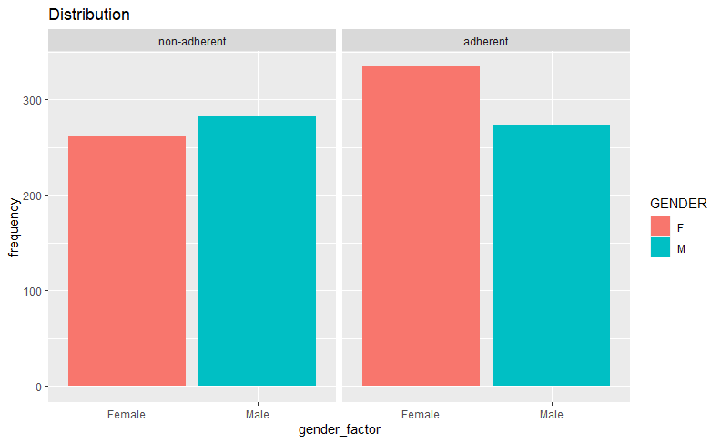
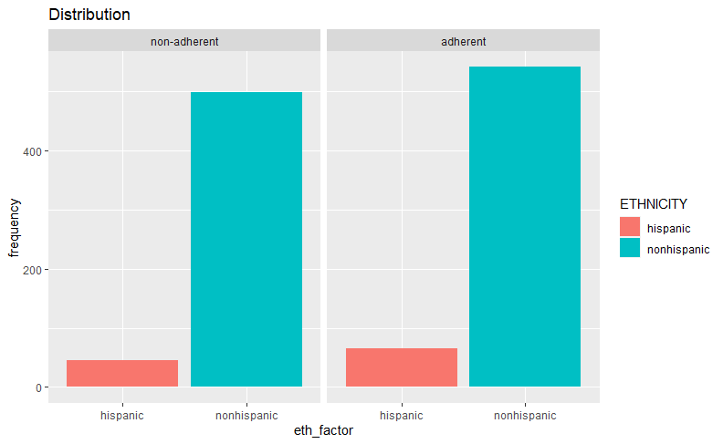
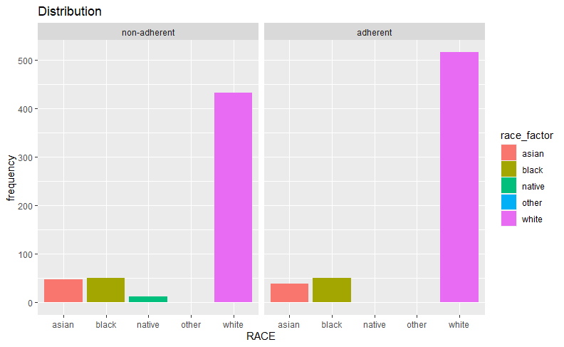
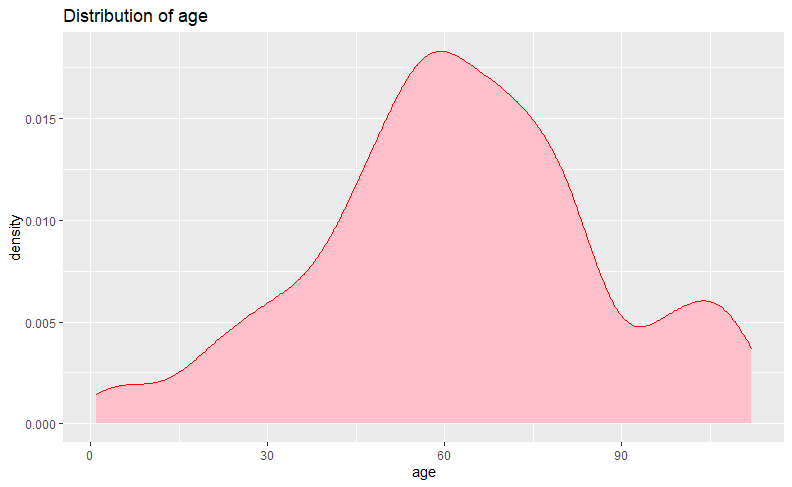

Data Exploration to find factors contributing to medical non-adherence

Studies show that femlae are more adherent to taking medicines than male and factor which can contibute towards this is that more number of male are working during the days and therefore prone to not taking medications due to work issues

HEllo

Here the survey clearly shows that people belonging to asain and black races are on the non-adherent sides compared to white .The graph also shows that native races due to less spread of literacy are are non-adherent while taking their medications

The trends from data shows that people generally during the age after 60 i.e people in their old age tend to be non-adherent towards medication intake